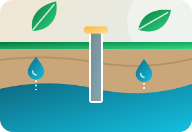
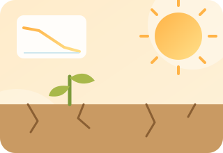
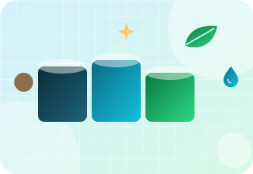
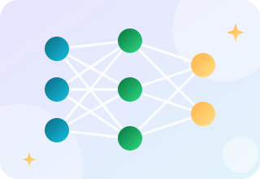
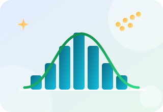
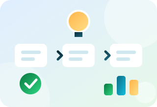

একটি কোর্সের খরচ কত?
ফি নির্ভর করে কোর্স, ধরন ও ব্যাচের আকারের ওপর। কোর্সের নাম লিখে বার্তা দিন, আমরা বর্তমান ফি জানিয়ে দেব।
জিওস্প্যাশিয়াল বিশ্লেষণ, পানি, পরিবেশ চর্চা, ডেটা সায়েন্স, গবেষণা দক্ষতা ও এআই বিষয়ে ব্যবহারিক কোর্স, অনলাইনে বা ক্যাম্পাসে।
ছয়টি ব্যাচ সম্পন্ন, চারটি অনলাইনে ও দুটি ক্যাম্পাসে। কাজ করতে করতে জিআইএস ও রিমোট সেন্সিং শিখুন।

তালিকা ছেঁকে নিতে একটি বিষয় বেছে নিন। প্রতিটি কোর্সে কী আছে দেখতে "বিস্তারিত" খুলুন, তারপর যোগাযোগ করুন। জানতে চাইলে তারিখ ও ফি জানিয়ে দেওয়া হয়।
আমাদের প্রধান কোর্স, ছয়টি ব্যাচে সম্পন্ন। স্থানিক ডেটা দিয়ে মানচিত্র তৈরি, বিশ্লেষণ ও উপস্থাপন শিখুন।
ডাউনলোড না করেই ক্লাউডে বহু বছরের স্যাটেলাইট ডেটা প্রক্রিয়াকরণ।
কোড দিয়ে মানচিত্রের কাজ স্বয়ংক্রিয় করা এবং রাস্টার ও ভেক্টর ডেটা নিয়ে কাজ।
ফ্লাইট পরিকল্পনা থেকে ড্রোনের ছবি দিয়ে মানচিত্র তৈরি পর্যন্ত।
একটি অববাহিকার জন্য বৃষ্টিপাত-পানিপ্রবাহ মডেল তৈরি, ক্যালিব্রেশন ও যাচাই।
নদীপ্রবাহের মডেল তৈরি এবং বন্যার গভীরতা ও বিস্তারের মানচিত্র প্রস্তুত।

অ্যাকুইফার বোঝা এবং তাতে কতটুকু পানি ফিরে আসে তা নিরূপণ।

দীর্ঘমেয়াদি আবহাওয়ার তথ্য থেকে খরা ও প্রবণতার ফলাফল বের করা।

একটি ইফ্লুয়েন্ট ট্রিটমেন্ট প্ল্যান্ট কীভাবে পরিকল্পনা, আকার নির্ধারণ ও যাচাই করা হয়।
আইইই বা ইআইএ প্রতিবেদনের কাঠামো এবং তা প্রস্তুতের পদ্ধতি শিখুন।
মাঠ জরিপের পরিকল্পনা ও বাস্তবায়ন, এবং নমুনা ও ডেটা সঠিকভাবে সংরক্ষণ।

মূল প্যারামিটারগুলো বোঝা এবং ফলাফল পড়ার পদ্ধতি।

পরিবেশ গবেষণায় শ্রেণিবিন্যাস ও পূর্বাভাসের জন্য মেশিন লার্নিংয়ের ব্যবহার।
ডেটা পরিষ্কার, বিশ্লেষণ ও গ্রাফ তৈরিতে পাইথনের ব্যবহারিক সূচনা।

প্রচলিত পরিসংখ্যানিক পরীক্ষা চালানো ও স্পষ্টভাবে উপস্থাপন।


গবেষণাপত্র লেখা এবং জমাদান ও পর্যালোচনার ধাপ পার করা।

স্পষ্ট চিত্র তৈরি এবং রেফারেন্স গুছিয়ে রাখা।
এআই টুল ব্যবহার করে দ্রুত কাজ করা, নির্ভুলতা ও সততা বজায় রেখে।
এআইয়ের সহায়তায় কারিগরি নথির খসড়া তৈরি, মানোন্নয়ন ও যাচাই।
কোর্সের নাম ও আপনার পছন্দের ধরন জানান।
আমরা আপনার সাথে ব্যাচ, তারিখ ও ফি নিশ্চিত করি।
বাস্তব ডেটা দিয়ে হাতে-কলমে সেশন ও নির্দেশিত অনুশীলন।
কাজ শেষ করুন এবং প্রযোজ্য ক্ষেত্রে সার্টিফিকেট নিন।
বিশ্ববিদ্যালয়ের বিভাগ, এনজিও বা কোম্পানির জন্য আমরা আলাদা ব্যাচ চালাতে পারি, অনলাইনে বা আপনার প্রাঙ্গণে। দলের আকার এবং আপনার কর্মীদের কী করতে হবে তা জানান।
ফি নির্ভর করে কোর্স, ধরন ও ব্যাচের আকারের ওপর। কোর্সের নাম লিখে বার্তা দিন, আমরা বর্তমান ফি জানিয়ে দেব।
জিআইএস ও আরএস সার্টিফিকেশন কোর্সের অংশগ্রহণকারীরা উপস্থিতির ভিত্তিতে ব্লুগ্রিন থেকে সার্টিফিকেট পান। অন্য কোর্সের সার্টিফিকেট সম্পর্কে আমাদের জিজ্ঞেস করুন।
আমরা জুম বা গুগল মিটের মাধ্যমে অনলাইন ব্যাচ এবং ক্যাম্পাসে ব্যাচ চালিয়েছি। অনুরোধে অন্য ধরনেও ব্যবস্থা করা যায়।
আমাদের আগের ব্যাচগুলোতে প্রায় ৩০ থেকে ৫০ জন শিক্ষার্থী ছিলেন। আপনার টিমের জন্য আলাদা ব্যাচ আরও ছোট হতে পারে।
বেশিরভাগ কোর্স নতুনদের জন্য উন্মুক্ত। প্রতিটি কোর্স কার্ডে স্তর লেখা আছে, আর বিস্তারিত অংশে লেখা আছে কোর্সটি কাদের জন্য।
হ্যাঁ, আপনার টিমের কী দরকার জানান, আমরা জানাব এমন কোর্স সাজাতে পারব কিনা।
আপনার পটভূমি ও লক্ষ্য জানান। আমরা একটি কোর্স ও তার ধরন প্রস্তাব করব।